CS767 Assignment 1
I use all 4 late days. new deadline is Oct. 7 Friday 11:59 p.m.
Problem 1
1.1 mySegmenter(imIn)
- Segmentate the image into foreground and background.
- Inputs : A 2-D logical or integer array, the image.
- Outputs :
- imOut : The Segmentated image.
- bdd_points : A polygon boundary of the image.
- bdd_length: The length of the polygon boundary.
- Area: Area inside the polygon boundary.
- diameter: the largest distance between two points in the ROI.
- Implementation:
- Segmentation: Ostu's Method on the histogram.
- boundary points: The (max_x,y) and (min_x,y) for every y, and fill up the gaps between boundary points. Given there is only one blob, this gives a polygon that surrounds the blob.
- bdd_length: The number of boundary points, sinces all boundary points are neighbors.
- Area: The integral of (max_x - min_x + 1) over y
- diameter: Runs a n^2 pairwise distances to find the diameter. Necessary because boundary is not convex.
- Results:
- Foregound pixels:
- Pixels inside boundary:
- 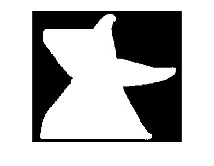
1.1 other (maybe unused) implementations
- myPerimeter: Handles bdd_points, bdd_length, Area, diameter for mySegmenter.
- myDiameter: Handles diameter for myPerimeter.
- myFill: Fills the blob so that it contains no holes.
- myArea(unused): Takes the set of boundary points, and calulates the area by dividing it into triangles.
- myPerimeterLength(unused):the sum of Euclidian distances between boundary points.
1.2 myDT(imIn,method)
- Creates the distance transfrom
- Inputs : A 2-D logical or integer array, the image.
- Outputs: [A,B]
- A: the distance map outside the boundary
- B: the distance map inside the boundary
- implementation: By default, uses BFS to calculate the mannhattan distance to the closest boundary point. If specified (method = '2-norm'), calculates distance from all pixels to each boundary point, then take min, vector programming, super fast.
- Results
- BFS
- 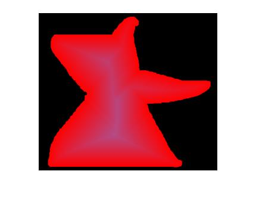 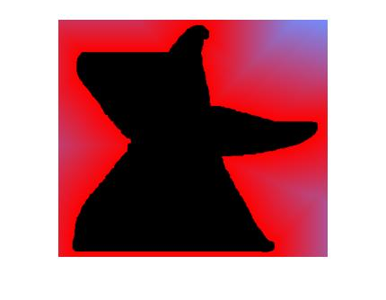
- 2-norm
-
1.3 Experiments
- The predictor seems to grow with area/boundary length/diameter. Since the blobs are mostly circles, boundary length and diameter grow together, area is their square. So the predictor has the same behavior to the three measures.
- Scatter plots:
- x = Diameter, y = prepictor, correlation = 0.4818
- 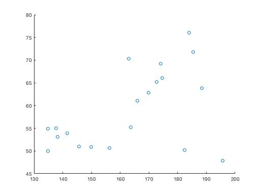
- x = Area, y = prepictor, correlation = 0.4646
- 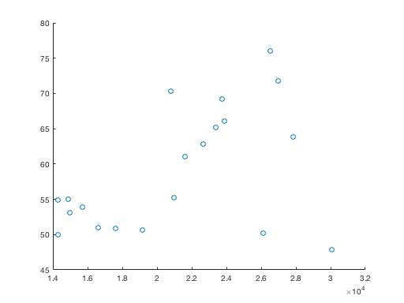
- x = Boundary length, y = prepictor, correlation = 0.4753
- 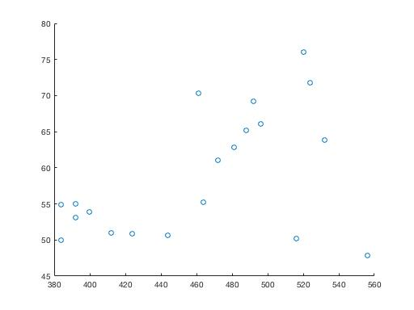
Problem 2
2.1 myRegionFinder(imIn)
- Assign different values to different blobs.
- Inputs : A 2-D logical or integer array, the image.
- Outputs: A 2-D uint8 array
- implementation: DFS to find connected components.
- Results: imshow(imOut/double(imOut)/max(max(imOut))
- 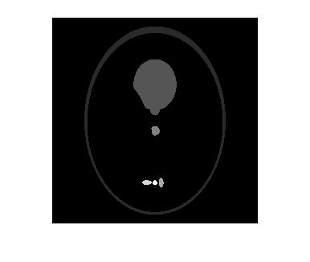 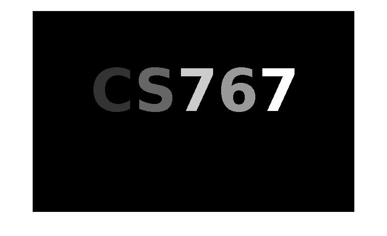
Problem 3.1
- myEdge(imIn,sigma): Based on Canny.
- Apply Gaussian filter
- Calculate gradient
- Filter out small gradients
- Non-maxium surpression
- myEdge2(imIn,n):
- Quantize intensitys into n values.
- Calculate gradient
- Filter out small gradients
- Non-maxium surpression
- Removing culttered edges:
- Erosion
- edge(x,y) = 0, if edge(x,y) has less than 2 pixels in the 8-neighborhood are edge pixels.
- Results
- myEdge:
- 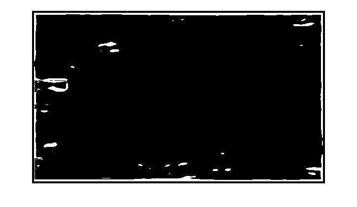 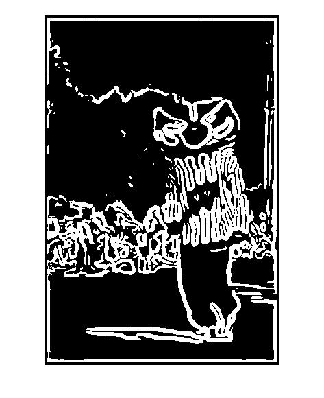 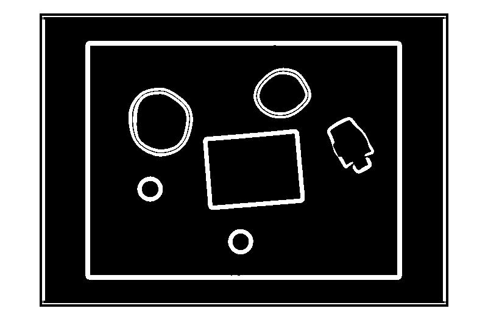 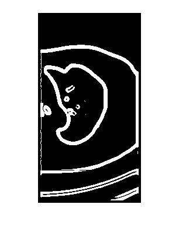
- myEdge2:
- 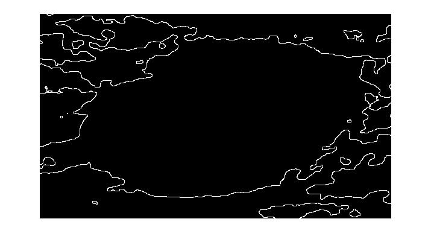 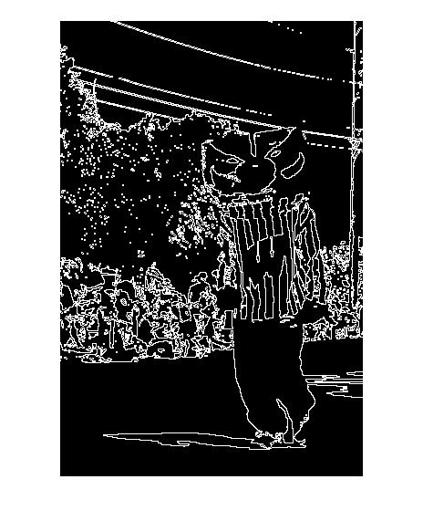 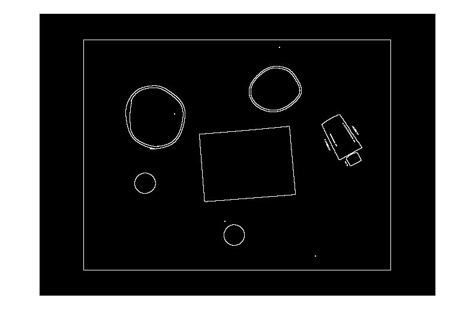 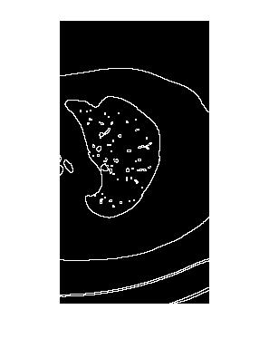
Problem 3.2
- groupEdge(imIn,x,y) Uses connected components method the group the edges. But allows a gap if 2 pixels between edges.
- Cloud.png, (150,76)
- 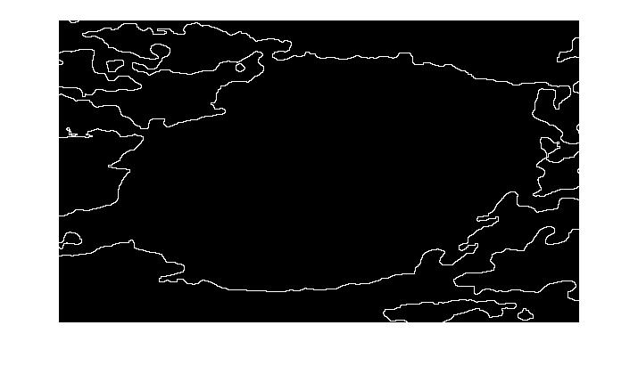
- edge_link.png, (150,76)
- 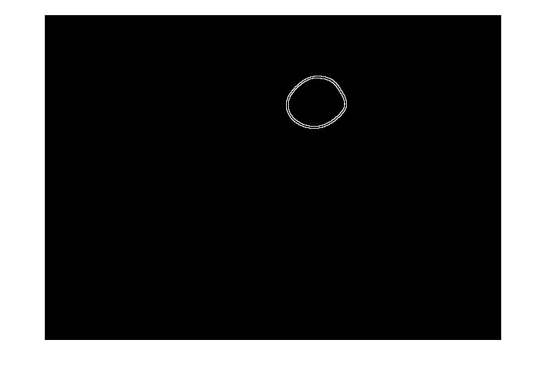
- img_ct_lung, (100,88)
- 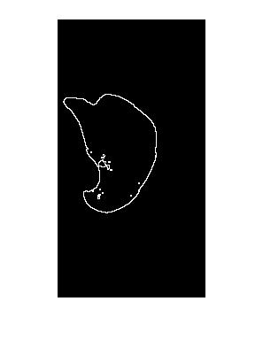
- edge_detecter, (400,197)
- 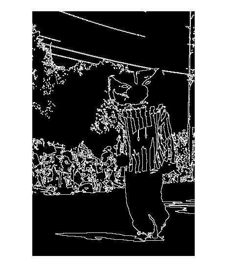
Problem 4
- IJCV 2001 Real-Time Face Detection
- For getFeature, I didn't implement any concepts from the paper. Since directly summing all the pixels would be the fastest.
- For getFeatureHist, I calculated the integral image first, then all the queries for getFeature(m,n,i,j) would be O(1) time.
- getFeature
- Regions that give no response are aproximately homogenious on the left and right.
- Regions that have positive response have decresing intensity from left to right.
- Regions that have negitive response have incresing intensity from left to right
- getFeatureHist